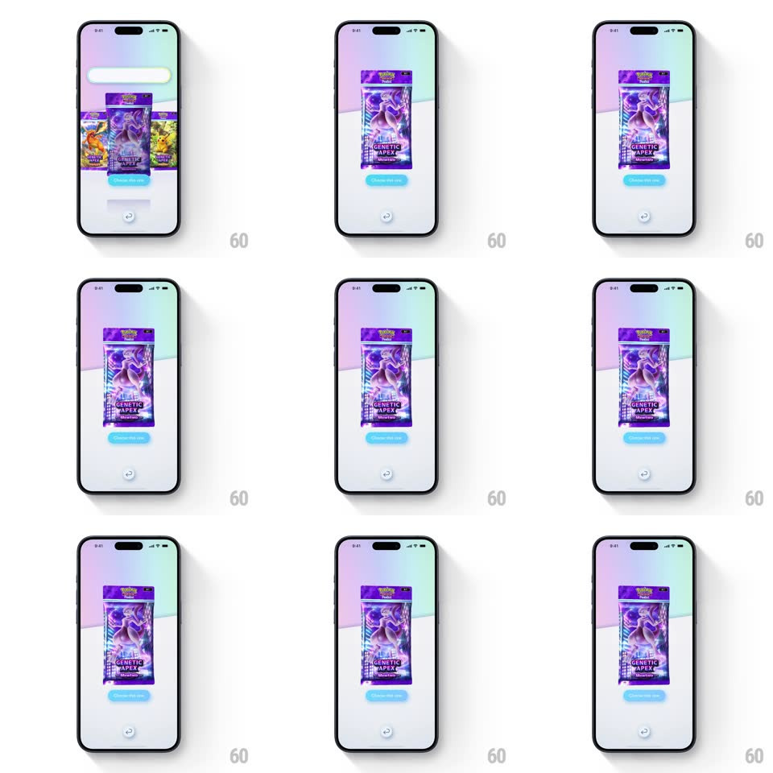

Media
Frame-by-frame

Rebuild this interaction 1:1: Pokemon TCG Pocket's pack inspection - after picking from the three-pack row, the chosen Genetic Apex pack takes center stage over the pastel gradient, and tapping the rotate button below flips the pack around in 3D while a holographic sheen sweeps across the wrapper.

Rebuild this interaction 1:1: Pokemon TCG Pocket's pack inspection - after picking from the three-pack row, the chosen Genetic Apex pack takes center stage over the pastel gradient, and tapping the rotate button below flips the pack around in 3D while a holographic sheen sweeps across the wrapper. ## Integration Integration: stack-agnostic spec - springs given as stiffness/damping, timed motions as duration + curve; map every value to your framework and animation library of choice. ## Scene Pastel gradient stage: the chosen purple Genetic Apex pack (Mewtwo art, crimped top with the Pokemon logo) floats large at center, a blue glow pill button beneath it, and a small circular rotate button at the bottom. The unchosen packs have left the frame. ## Motion spec Pattern: 3D pack rotation with holo sheen. - Selection: the chosen pack lifts and grows to center stage (scale 1 -> 1.4, translateY -8%, spring ~300/18, 450ms) while the other packs slide off and fade (250ms). - Tap the rotate button: the pack spins a full 360deg around its vertical axis (rotateY, 900ms, ease-in-out with slight acceleration through the middle), showing the crimped edges and back. - During rotation a holographic sheen band sweeps across the wrapper (specular gradient tracking the rotation angle) - the foil catches the light as it turns. - The pack idles with a gentle bob (translateY +/-6px, 2.5s loop) and a very slow yaw drift (+/-4deg, 6s). - The blue button pulses softly (glow opacity 30% -> 60%, 1.5s loop) inviting the open. ## Calibration - The spin is one smooth full turn - no wobble at the end; the pack lands exactly front-facing. - Sheen is brightest edge-on - the foil effect peaks mid-rotation. ## Reduced motion Pack rotates 180deg and back with no sheen sweep. ## Don't miss - The wrapper art is fully 3D-lit - highlights shift on the crimped foil edges during the spin. - The pack's floor reflection rotates with it.